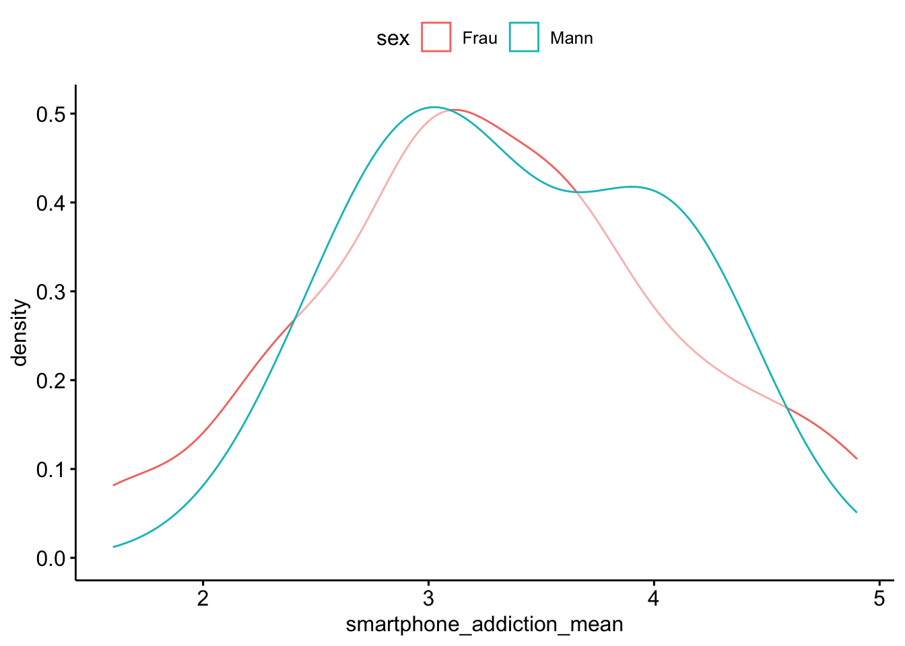
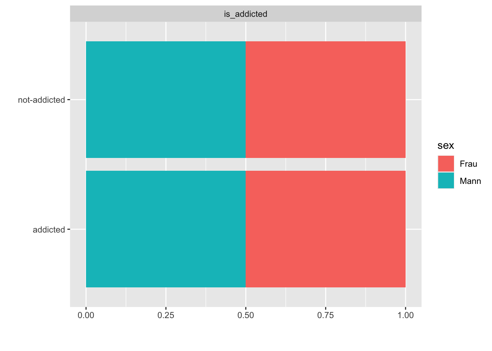
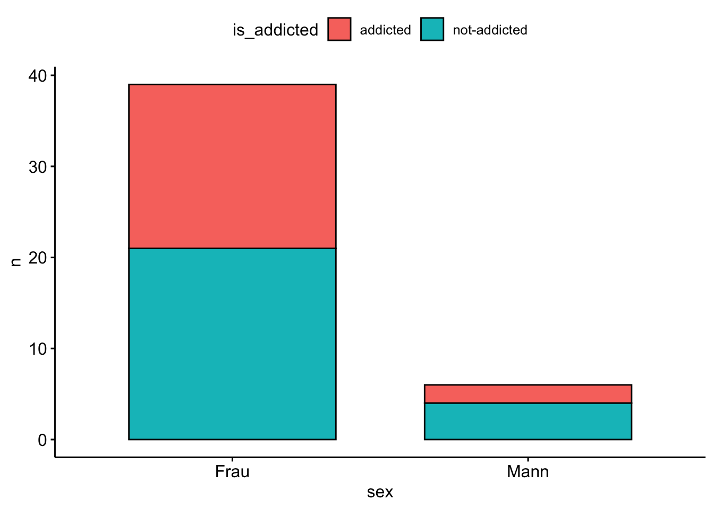
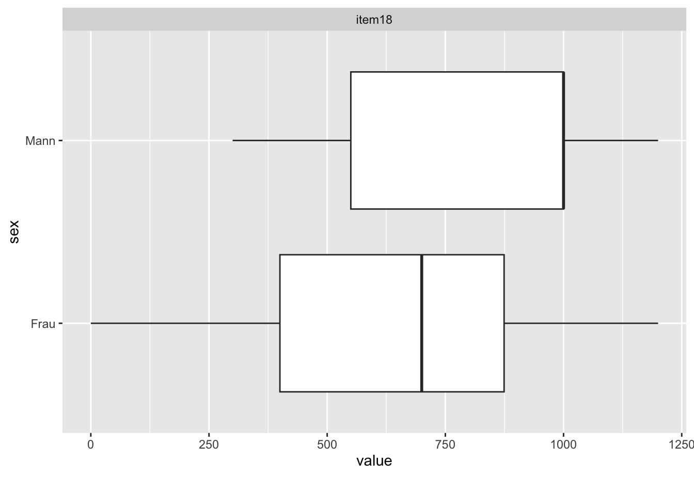

data_path <- "https://raw.githubusercontent.com/sebastiansauer/statistik1/main/daten/Smartphone-Nutzung%20(Responses)%20-%20Form%20responses%201.csv"
smartphone_raw <- read.csv(data_path)smartphone1
R
eda
datawrangling
vis
yacsda
1 Aufgabe
In dieser Fallstudie analysieren Sie die Ergebnisse einer Umfrage zum Thema Smartphone-Nutzung.
Kernstück der Umfrage ist die Smartphone-Sucht-Skala (Kwon et al., 2013). Eine Studie fand, dass ca. ein Siebtel der Studierenden süchtig nach ihrem Smartphone sind (Haug et al., 2015); demnach könnte dem Thema eine hohe Bedeutsamkeit zukommen.
- Importieren Sie den Datensatz zur Handynutzung von Google-Docs.
- Benennen Sie die Spalten um und zwar nach folgendem Muster:
itemXY, wobeiXYdie Nummer der Spalte ist. Sichern Sie die ursprünglichen Spaltennamen in einem Vektor. - Berechnen Sie für die Items der Smartphone-Addiction-Scale den Mittelwert pro Person. Tipp: Erstellen Sie einen Dataframe mit den entsprechenden Items und nutzen Sie dann die Funktion
rowMeans(mein_dataframe), um den Mittelwert über mehrere Spalten für jede Zeile zu berechnen (“Score”). - Visualisieren Sie die Verteilung des Scores getrennt für die Geschlechter.
- Nach einer Quelle (Kwon et al., 2013) liegt der Cutoff-Wert für Sucht bei 3.1 (Männer) bzw. 3.3 (Frauen). Bestimmen Sie den Anteil abhängiger Personen (pro Geschlecht).
- Das Item
i13ist ein Versuch, mit einem einzelnen Item zu messen, ob jemand süchtig nach seinem Smartphone ist (Item-Label: “Ich.würde.sagen..dass.ich.smartphone.süchtig.bin.”). Visualisieren Sie den Zusammenhang dieses Items mit dem Score. - Visualsieren Sie den Anteil abhängiger Personen.
- Berechnen Sie, wie viel Geld für das zuletzt gekaufte Handy im Schnitt ausgegeben wurde. Gruppieren Sie dabei nach dem Betriebsystem.
- Wer gibt mehr Geld für das Handy aus: Frauen oder Männer? Beantworten Sie die Frage anhand des Medians.
- Visualisieren Sie den Median des Geldausgebens für das Handy, getrennt nach Geschlechtern
Tip
Nutzen Sie ChatGPT oder einen anderen Bot, um sich Hilfe mit dem R-Code zu holen. \(\square\)
Tip
Es wird (fast) nie von Ihnen verlangt, dass Sie eine Aufgabe mit einem bestimmten R-Befehl lösen. Wenn Ihnen ein bestimmter R-Befehl nicht zusagt (oder Sie ihn nicht kennen oder verstehen) – dann nehmen Sie einfach einen anderen R-Befehl, der Ihnen mehr zusagt. \(\square\)
Note
Beachten Sie die Hinweise des Datenwerks. \(\square\)
2 Lösung
2.1 Daten importieren
2.2 Spalten umbenennen
item_labels <- names(smartphone_raw)
names(smartphone_raw) <- paste0("item",1:ncol(smartphone_raw))Sie möchten lieber zweistellige Nummern für die Spalten, also 01, 02, …, 09, 10, …? Gute Idee. Aber wie macht man das? Eine einfache Lösung: Fragen Sie ChatGPT!
üë©‚Äçüéì: I want a string of the type ‚ÄúitemXY‚Äù, where XY is a number between 0 and 18. Make sure to use two digits. Use the R function
paste0.
ü§ñ: üò∏
2.3 Mittelwert der Smartphone-Addiction-Scale
smartphone_addiction_mittelwert <-
smartphone_raw |>
select(item3:item12) |>
rowMeans()Wir erhalten einen Vektor mit den Mittwerten (Score) pro Person für die Skala Smartphone-Abhängigkeit:
head(smartphone_addiction_mittelwert)[1] 3.0 3.8 2.7 3.2 4.2 3.3Diesen Vektor fügen wir dann unseren Daten hinzu. Außerdem benennen wir die Spalte item15 in sex um, damit wir uns merken können, in welcher Spalte das Geschlecht codiert ist.
smartphone <-
smartphone_raw |>
mutate(smartphone_addiction_mean = smartphone_addiction_mittelwert) |>
rename(sex = item15) |>
filter(sex == "Frau" | sex == "Mann") Mit rename(neuer_name = alter_name) können Sie die Namen von Spalten Ihrer Datentabelle ändern.
üßë‚Äçüéì Also das mit
renamehätte ich jetzt nicht gewusst.
üë©‚Äçüè´ Dann frag mal ChatGPT.
ü§ñ Ja, bitte!!
Alternativ können Sie die folgende, etwas fortgeschrittenere Syntax nutzen:
smartphone2 <-
smartphone_raw |>
rowwise() |>
mutate(smartphone_addiction_mean = mean(c_across(item3:item12))) 2.4 Score visualisieren
Leider kann DataExplorer nicht mehrere Gruppen in einem Dichtediagramm anzeigen. Wir müssten also mit DataExplorer zwei Diagramme erstellen, eines für Frauen und eines für Männer. Eleganter geht es mit dem Paket ggpubr
smartphone |>
ggdensity(x = "smartphone_addiction_mean",
color = "sex")Warning: Removed 1 row containing non-finite outside the scale range
(`stat_density()`).
2.5 Anteil Smartphone-Abhängigkeit
Mit case_when erstellen wir folgende Regel:
- “addicted”: wenn der Score > 3.1 und das Geschlecht “Mann” ist bzw.
- “addicted”: wenn der Score > 3.3 und das Geschlecht “Frau” ist bzw.
- “nicht addicted”: ansonsten
smartphone <-
smartphone |>
mutate(is_addicted =
case_when(smartphone_addiction_mean > 3.1 & sex == "Mann" ~ "addicted",
smartphone_addiction_mean > 3.3 & sex == "Frau" ~ "addicted",
TRUE ~ "not-addicted"))Jetzt haben wir die Spalte is_addicted, die für jede Person (Zeile) angibt, ob die Person addicted ist. Nun zählen wir die Anzahl (n) aus, und zwar pro Geschlechtsgruppe. Weil es praktisch ist, rechen wir die Anzahl noch in einen Anteil (proportion) um.
smartphone_count <-
smartphone |>
group_by(sex) |>
count(is_addicted) |>
mutate(is_addicted_proportion = n / sum(n))
smartphone_count# A tibble: 4 × 4
# Groups: sex [2]
sex is_addicted n is_addicted_proportion
<chr> <chr> <int> <dbl>
1 Frau addicted 18 0.462
2 Frau not-addicted 21 0.538
3 Mann addicted 2 0.333
4 Mann not-addicted 4 0.6672.6 Smartphone-Sucht, mit einzelnen Item gemessen
smartphone |>
select(smartphone_addiction_mean, item13) |>
drop_na() |>
plot_scatterplot(by = "smartphone_addiction_mean")
Es scheint einen Zusammenhang zwischen item13 und smartphone_addiction_mean zu geben.
2.7 Anteil der Abhängigen visualisieren
Der Anteil der abhängigen Personen ist in beiden Geschlechtern gleich hoch:
smartphone_count |>
plot_bar(by = "sex")
Hier noch eine alternative Visualisierung mit dem Paket ggpubr:
smartphone_count |>
ggbarplot(x = "sex", y = "n", fill = "is_addicted")
2.8 Kosten nach Betriebssystem
smartphone |>
group_by(item17) |>
summarise(price_mean = mean(item18, na.rm = TRUE))# A tibble: 2 × 2
item17 price_mean
<chr> <dbl>
1 Android 412
2 iOS 742.2.9 Kosten nach Geschlecht
smartphone |>
group_by(sex) |>
summarise(price_median = median(item18, na.rm = TRUE))# A tibble: 2 × 2
sex price_median
<chr> <dbl>
1 Frau 700
2 Mann 1000Männer geben im Median 300 Euro mehr aus.
Tip
Wenn Sie nicht mehr wissen, was z.B. na.rm = TRUE bedeutet, dann einfach googeln oder einen ChatBot fragen. In der Regel ist die Frage dann in zwei Minuten beantwortet. \(\square\)
2.10 Kosten nach Geschlecht visualisieren
smartphone |>
select(sex, item18) |>
plot_boxplot(by = "sex")Warning: Removed 1 row containing non-finite outside the scale range
(`stat_boxplot()`).
Wie man sieht ist der Median bei den Männern höher als bei den Frauen. Allerdings fällt der Median der Männer aus das dritte Quartil, was vermuten lässt, dass da irgendwas nicht stimmt. Schauen wir uns die Daten näher an:
smartphone |>
filter(sex == "Mann") item1 item2 item3 item4 item5 item6 item7 item8 item9 item10
1 02/05/2024 16:29:51 4 4 3 NA 1 NA 1 4
2 02/05/2024 16:30:37 16:20:00 2 5 2 4 3 3 3 3
3 02/05/2024 16:30:42 16:20:00 1 2 2 4 1 1 6 5
4 02/05/2024 16:30:48 16:30:00 5 5 2 6 2 2 5 4
5 02/05/2024 16:30:58 16:00:00 4 2 3 5 2 2 3 4
6 02/05/2024 16:31:28 16:28:00 6 6 1 6 3 2 6 3
item11 item12 item13 item14 sex item16 item17 item18
1 4 NA 2 Mann 21 Android 400
2 4 2 4 Mann 19 iOS 1000
3 3 1 5 Mann 22 iOS 1200
4 5 4 4 Mann 19 Android 300
5 5 1 2 Mann 29 iOS 1000
6 6 2 5 Mann 19 iOS 1000
smartphone_addiction_mean is_addicted
1 NA not-addicted
2 3.1 not-addicted
3 2.6 not-addicted
4 4.0 addicted
5 3.1 not-addicted
6 4.1 addictedAh, es sind einfach sehr wenig Männer in diesem Datensatz enthalten.
References
Haug, S., Castro, R. P., Kwon, M., Filler, A., Kowatsch, T., & Schaub, M. P. (2015). Smartphone use and smartphone addiction among young people in Switzerland. Journal of Behavioral Addictions, 4(4), 299–307. https://doi.org/10.1556/2006.4.2015.037
Kwon, M., Kim, D.-J., Cho, H., & Yang, S. (2013). The smartphone addiction scale: Development and validation of a short version for adolescents. PloS One, 8(12), e83558. https://doi.org/10.1371/journal.pone.0083558